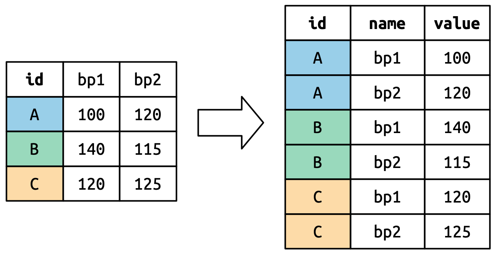
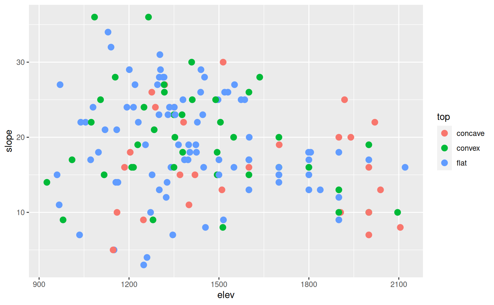
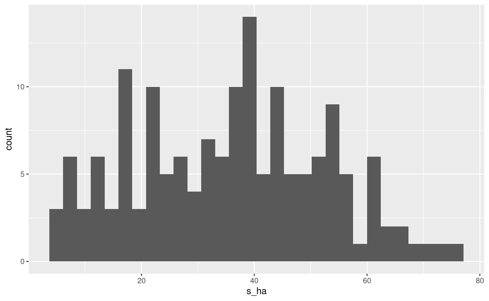
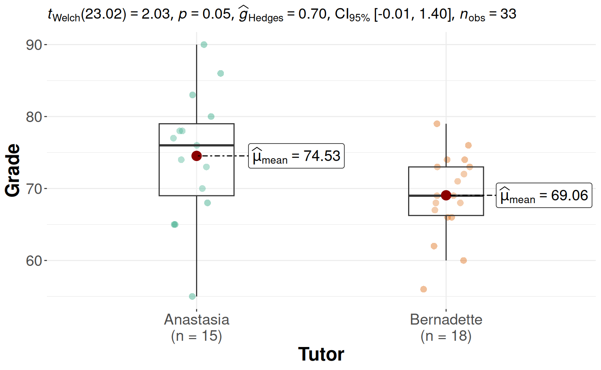
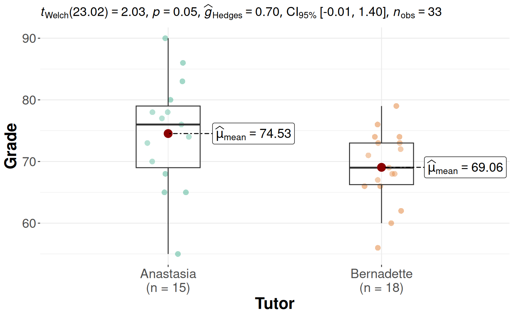
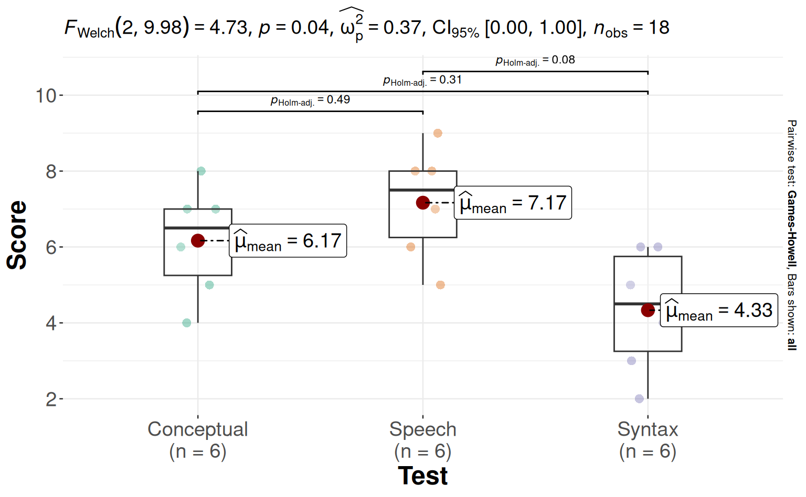
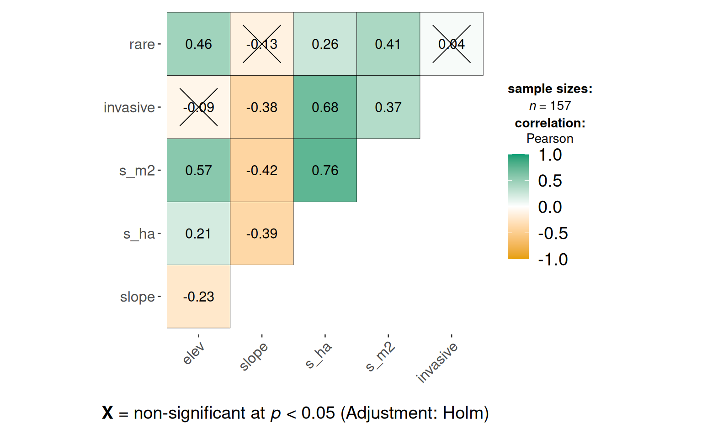
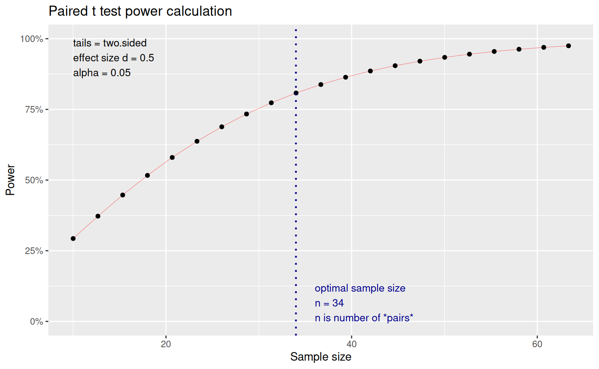
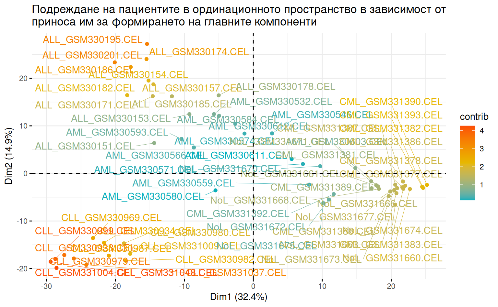

2 + 2[1] 4x <- 6
y <- 10
(x + y)^2[1] 256
https://posit.co/download/rstudio-desktop/

install.packages(“tidyverse”)
remove.packages(“tidyverse”)
2 + 2[1] 4x <- 6
y <- 10
(x + y)^2[1] 256library(tidyverse)
students <- read_csv("students.csv")students <- read_csv("https://pos.it/r4ds-students-csv")glimpse(students)Rows: 6
Columns: 5
$ `Student ID` <dbl> 1, 2, 3, 4, 5, 6
$ `Full Name` <chr> "Sunil Huffmann", "Barclay Lynn", "Jayendra Lyne", "Leo…
$ favourite.food <chr> "Strawberry yoghurt", "French fries", "N/A", "Anchovies…
$ mealPlan <chr> "Lunch only", "Lunch only", "Breakfast and lunch", "Lun…
$ AGE <chr> "4", "5", "7", NA, "five", "6"diss <- read_csv("diss.csv")
glimpse(diss)Rows: 157
Columns: 36
$ plot <chr> "sw1085nnw", "sw1130n", "sw1250nw", "sw1276nnw", "sw1319n"…
$ com <chr> "a", "a", "a", "a", "a", "a", "a", "a", "b", "b", "b", "b"…
$ veg_type <chr> "f", "f", "f", "f", "f", "f", "f", "f", "f", "f", "f", "f"…
$ exp <chr> "een_nnw", "n_ne_nne", "e_nw", "een_nnw", "n_ne_nne", "n_n…
$ top <chr> "convex", "flat", "convex", "concave", "concave", "flat", …
$ elev <dbl> 1085, 1130, 1250, 1276, 1319, 1140, 1215, 1300, 1301, 1156…
$ slope <dbl> 36, 34, 24, 26, 27, 32, 24, 23, 28, 14, 9, 19, 29, 29, 24,…
$ s_ha <dbl> 42, 33, 37, 33, 30, 40, 30, 43, 24, 26, 17, 11, 17, 21, 20…
$ s_m2 <dbl> 2, 2, 6, 3, 2, 6, 5, 5, 5, 2, 2, 0, 1, 2, 2, 5, 2, 3, 4, 3…
$ n2 <dbl> 9, 5, 12, 8, 5, 18, 14, 11, 11, 3, 3, 2, 3, 5, 3, 8, 6, 11…
$ e <dbl> 0.4, 0.4, 0.6, 0.5, 0.4, 0.8, 0.7, 0.5, 0.7, 0.4, 0.5, 0.6…
$ invasive <dbl> 0, 0, 1, 1, 0, 2, 0, 0, 0, 0, 1, 0, 1, 0, 2, 3, 1, 1, 0, 2…
$ rare <dbl> 0, 0, 0, 0, 0, 0, 0, 0, 0, 0, 0, 0, 0, 0, 0, 0, 0, 0, 0, 0…
$ tree_cover <dbl> 85, 90, 80, 85, 90, 95, 85, 80, 90, 90, 90, 90, 85, 90, 85…
$ shrub_cover <dbl> 3, 2, 2, 0, 0, 0, 0, 0, 0, 4, 0, 0, 1, 0, 1, 2, 0, 0, 1, 1…
$ herb_cover <dbl> 1, 3, 4, 1, 6, 16, 3, 20, 13, 2, 4, 0, 2, 3, 0, 6, 2, 3, 3…
$ ph <dbl> 13, 9, 12, 9, 5, 11, 7, 9, 3, 5, 3, 4, 2, 5, 7, 7, 4, 6, 5…
$ ch <dbl> 0, 0, 0, 0, 0, 0, 0, 0, 0, 0, 0, 0, 0, 0, 0, 0, 0, 0, 0, 0…
$ h <dbl> 23, 20, 20, 19, 20, 24, 20, 29, 18, 20, 14, 6, 14, 14, 13,…
$ cr <dbl> 6, 4, 5, 5, 4, 4, 3, 5, 3, 1, 0, 1, 0, 2, 0, 3, 1, 3, 1, 1…
$ th <dbl> 0, 0, 0, 0, 1, 1, 0, 0, 0, 0, 0, 0, 1, 0, 0, 4, 1, 1, 1, 0…
$ trees <dbl> 4, 4, 4, 2, 2, 7, 3, 4, 2, 3, 1, 3, 2, 4, 2, 4, 3, 5, 3, 4…
$ shrubs <dbl> 9, 5, 8, 7, 3, 4, 4, 5, 1, 2, 2, 1, 0, 1, 5, 3, 1, 1, 2, 2…
$ semishrubs <dbl> 0, 0, 0, 0, 0, 0, 0, 0, 0, 0, 0, 0, 0, 0, 0, 0, 0, 0, 0, 0…
$ perennials <dbl> 28, 24, 25, 24, 24, 27, 22, 34, 21, 21, 13, 7, 14, 16, 13,…
$ biennials <dbl> 1, 0, 0, 0, 0, 0, 1, 0, 0, 0, 0, 0, 0, 0, 0, 0, 0, 0, 0, 0…
$ annuals <dbl> 0, 0, 0, 0, 1, 2, 0, 0, 0, 0, 1, 0, 1, 0, 0, 5, 1, 1, 1, 0…
$ x1_5 <dbl> 45, 100, 166, 5, 10, 32, 32, 6, 6, 143, 14, 23, 56, 11, 26…
$ x5_10 <dbl> 63, 130, 265, 14, 24, 91, 134, 50, 17, 52, 2, 49, 19, 36, …
$ x10_15 <dbl> 38, 77, 153, 28, 23, 52, 82, 86, 6, 13, 9, 34, 21, 33, 20,…
$ x15_20 <dbl> 21, 33, 18, 29, 25, 37, 61, 83, 17, 8, 7, 40, 10, 24, 33, …
$ x20_25 <dbl> 20, 26, 4, 19, 17, 27, 17, 39, 22, 26, 13, 24, 8, 16, 27, …
$ x25_30 <dbl> 5, 3, 4, 11, 20, 0, 12, 4, 11, 24, 8, 8, 5, 9, 19, 19, 13,…
$ x30_35 <dbl> 0, 0, 0, 10, 11, 0, 0, 0, 10, 17, 10, 15, 8, 8, 6, 1, 10, …
$ x_35 <dbl> 3, 0, 0, 5, 1, 0, 4, 0, 9, 12, 23, 14, 27, 11, 5, 8, 15, 0…
$ total_stems <dbl> 195, 369, 610, 121, 131, 239, 342, 268, 98, 295, 86, 207, …students <- read_csv("students.csv", na = c("N/A", "NA"))students <- read_csv("students.csv", na = c("N/A", "NA"), col_types = "icccd")students %>% rename(student_id = `Student ID`, full_name = `Full Name`)# A tibble: 6 × 5
student_id full_name favourite.food mealPlan AGE
<int> <chr> <chr> <chr> <dbl>
1 1 Sunil Huffmann Strawberry yoghurt Lunch only 4
2 2 Barclay Lynn French fries Lunch only 5
3 3 Jayendra Lyne <NA> Breakfast and lunch 7
4 4 Leon Rossini Anchovies Lunch only NA
5 5 Chidiegwu Dunkel Pizza Breakfast and lunch NA
6 6 Güvenç Attila Ice cream Lunch only 6library(janitor)
students %>% clean_names()# A tibble: 6 × 5
student_id full_name favourite_food meal_plan age
<int> <chr> <chr> <chr> <dbl>
1 1 Sunil Huffmann Strawberry yoghurt Lunch only 4
2 2 Barclay Lynn French fries Lunch only 5
3 3 Jayendra Lyne <NA> Breakfast and lunch 7
4 4 Leon Rossini Anchovies Lunch only NA
5 5 Chidiegwu Dunkel Pizza Breakfast and lunch NA
6 6 Güvenç Attila Ice cream Lunch only 6read_tsv() # разделител tab
read_delim() # неизвестен разделител
library(readxl)
read_excel() # екселски файлwrite_csv(students, "students_clean.csv")
write_rds(students, "students_clean.rds")tibble(
x = c(1, 2, 5),
y = c("h", "m", "g"),
z = c(0.08, 0.83, 0.60)
)# A tibble: 3 × 3
x y z
<dbl> <chr> <dbl>
1 1 h 0.08
2 2 m 0.83
3 5 g 0.6 tribble(
~x, ~y, ~z,
"h", 1, 0.08,
"m", 2, 0.83,
"g", 5, 0.60,
)# A tibble: 3 × 3
x y z
<chr> <dbl> <dbl>
1 h 1 0.08
2 m 2 0.83
3 g 5 0.6 df <- tibble(
integer = sample(c(1:50), 100, replace = T),
double = rnorm(100),
character = sample(letters[1:26], 100, replace = T),
factor = factor(sample(c("tree", "animal", "fungi"), 100, replace = T)),
logical = as.logical(sample(c("TRUE", "FALSE"), 100, replace = T)),
date = Sys.Date() - 100
)
glimpse(df)Rows: 100
Columns: 6
$ integer <int> 11, 31, 13, 8, 42, 2, 49, 14, 47, 33, 3, 6, 16, 48, 27, 6, 4…
$ double <dbl> 2.41438413, 0.51985087, -0.15709846, -0.29350514, 1.63476898…
$ character <chr> "w", "l", "c", "r", "t", "e", "r", "o", "m", "t", "q", "y", …
$ factor <fct> fungi, fungi, animal, animal, fungi, animal, tree, tree, tre…
$ logical <lgl> FALSE, TRUE, TRUE, FALSE, TRUE, TRUE, FALSE, FALSE, TRUE, TR…
$ date <date> 2022-12-17, 2022-12-17, 2022-12-17, 2022-12-17, 2022-12-17,…
diss %>% filter(elev > 1500)# A tibble: 56 × 36
plot com veg_type exp top elev slope s_ha s_m2 n2 e invasive
<chr> <chr> <chr> <chr> <chr> <dbl> <dbl> <dbl> <dbl> <dbl> <dbl> <dbl>
1 e155… c f n_ne… flat 1550 16 25 6 11 0.7 0
2 e160… c f e_nw conv… 1600 26 35 7 13 0.6 0
3 e170… c f e_nw conc… 1701 19 33 7 13 0.7 1
4 see1… c f s_sw… flat 1519 26 34 5 14 0.7 2
5 sse1… c f een_… conc… 1514 30 37 4 9 0.5 1
6 sse1… c f een_… conv… 1549 20 17 2 3 0.5 0
7 see1… d f e_nw flat 1552 27 39 6 10 0.5 2
8 see1… d f se_w flat 1601 20 24 3 7 0.6 1
9 see1… d f e_nw conv… 1636 28 21 2 5 0.5 2
10 sse1… d f s_sw… flat 1574 25 13 1 3 0.5 1
# ℹ 46 more rows
# ℹ 24 more variables: rare <dbl>, tree_cover <dbl>, shrub_cover <dbl>,
# herb_cover <dbl>, ph <dbl>, ch <dbl>, h <dbl>, cr <dbl>, th <dbl>,
# trees <dbl>, shrubs <dbl>, semishrubs <dbl>, perennials <dbl>,
# biennials <dbl>, annuals <dbl>, x1_5 <dbl>, x5_10 <dbl>, x10_15 <dbl>,
# x15_20 <dbl>, x20_25 <dbl>, x25_30 <dbl>, x30_35 <dbl>, x_35 <dbl>,
# total_stems <dbl>diss %>% filter(elev > 1500 & top == "flat")# A tibble: 28 × 36
plot com veg_type exp top elev slope s_ha s_m2 n2 e invasive
<chr> <chr> <chr> <chr> <chr> <dbl> <dbl> <dbl> <dbl> <dbl> <dbl> <dbl>
1 e155… c f n_ne… flat 1550 16 25 6 11 0.7 0
2 see1… c f s_sw… flat 1519 26 34 5 14 0.7 2
3 see1… d f e_nw flat 1552 27 39 6 10 0.5 2
4 see1… d f se_w flat 1601 20 24 3 7 0.6 1
5 sse1… d f s_sw… flat 1574 25 13 1 3 0.5 1
6 se15… f f e_nw flat 1530 26 43 8 23 0.8 2
7 se15… f f s_sw… flat 1586 25 45 5 17 0.6 7
8 s180… j s s_sw… flat 1800 16 55 15 31 0.8 1
9 s160… k s sse_… flat 1600 17 74 23 44 0.8 6
10 sse1… k s ees_… flat 1600 17 60 17 34 0.8 4
# ℹ 18 more rows
# ℹ 24 more variables: rare <dbl>, tree_cover <dbl>, shrub_cover <dbl>,
# herb_cover <dbl>, ph <dbl>, ch <dbl>, h <dbl>, cr <dbl>, th <dbl>,
# trees <dbl>, shrubs <dbl>, semishrubs <dbl>, perennials <dbl>,
# biennials <dbl>, annuals <dbl>, x1_5 <dbl>, x5_10 <dbl>, x10_15 <dbl>,
# x15_20 <dbl>, x20_25 <dbl>, x25_30 <dbl>, x30_35 <dbl>, x_35 <dbl>,
# total_stems <dbl>diss %>% filter(top == "concave" | exp == "e_nw")# A tibble: 53 × 36
plot com veg_type exp top elev slope s_ha s_m2 n2 e invasive
<chr> <chr> <chr> <chr> <chr> <dbl> <dbl> <dbl> <dbl> <dbl> <dbl> <dbl>
1 sw12… a f e_nw conv… 1250 24 37 6 12 0.6 1
2 sw12… a f een_… conc… 1276 26 33 3 8 0.5 1
3 sw13… a f n_ne… conc… 1319 27 30 2 5 0.4 0
4 ssw1… b f e_nw flat 1305 29 17 1 3 0.5 1
5 sw12… b f e_nw conc… 1288 24 20 2 3 0.4 2
6 w118… b f een_… conc… 1185 16 34 3 11 0.6 1
7 w137… b f sse_… conc… 1370 15 28 3 7 0.5 2
8 e144… c f e_nw flat 1446 23 14 1 4 0.6 0
9 e160… c f e_nw conv… 1600 26 35 7 13 0.6 0
10 e170… c f e_nw conc… 1701 19 33 7 13 0.7 1
# ℹ 43 more rows
# ℹ 24 more variables: rare <dbl>, tree_cover <dbl>, shrub_cover <dbl>,
# herb_cover <dbl>, ph <dbl>, ch <dbl>, h <dbl>, cr <dbl>, th <dbl>,
# trees <dbl>, shrubs <dbl>, semishrubs <dbl>, perennials <dbl>,
# biennials <dbl>, annuals <dbl>, x1_5 <dbl>, x5_10 <dbl>, x10_15 <dbl>,
# x15_20 <dbl>, x20_25 <dbl>, x25_30 <dbl>, x30_35 <dbl>, x_35 <dbl>,
# total_stems <dbl>diss %>% filter(com %in% c("a", "b"))# A tibble: 20 × 36
plot com veg_type exp top elev slope s_ha s_m2 n2 e invasive
<chr> <chr> <chr> <chr> <chr> <dbl> <dbl> <dbl> <dbl> <dbl> <dbl> <dbl>
1 sw10… a f een_… conv… 1085 36 42 2 9 0.4 0
2 sw11… a f n_ne… flat 1130 34 33 2 5 0.4 0
3 sw12… a f e_nw conv… 1250 24 37 6 12 0.6 1
4 sw12… a f een_… conc… 1276 26 33 3 8 0.5 1
5 sw13… a f n_ne… conc… 1319 27 30 2 5 0.4 0
6 sww1… a f n_ne… flat 1140 32 40 6 18 0.8 2
7 sww1… a f n_ne… flat 1215 24 30 5 14 0.7 0
8 sww1… a f n_ne… flat 1300 23 43 5 11 0.5 0
9 e130… b f een_… flat 1301 28 24 5 11 0.7 0
10 s115… b f n_ne… flat 1156 14 26 2 3 0.4 0
11 s128… b f ees_… conv… 1280 9 17 2 3 0.5 1
12 ssw1… b f een_… conv… 1229 19 11 0 2 0.6 0
13 ssw1… b f e_nw flat 1305 29 17 1 3 0.5 1
14 sw12… b f een_… flat 1201 29 21 2 5 0.5 0
15 sw12… b f e_nw conc… 1288 24 20 2 3 0.4 2
16 sw13… b f een_… flat 1335 24 36 5 8 0.5 3
17 sww1… b f se_w flat 1340 16 23 2 6 0.5 1
18 w118… b f een_… conc… 1185 16 34 3 11 0.6 1
19 w122… b f n_ne… flat 1220 27 40 4 9 0.4 0
20 w137… b f sse_… conc… 1370 15 28 3 7 0.5 2
# ℹ 24 more variables: rare <dbl>, tree_cover <dbl>, shrub_cover <dbl>,
# herb_cover <dbl>, ph <dbl>, ch <dbl>, h <dbl>, cr <dbl>, th <dbl>,
# trees <dbl>, shrubs <dbl>, semishrubs <dbl>, perennials <dbl>,
# biennials <dbl>, annuals <dbl>, x1_5 <dbl>, x5_10 <dbl>, x10_15 <dbl>,
# x15_20 <dbl>, x20_25 <dbl>, x25_30 <dbl>, x30_35 <dbl>, x_35 <dbl>,
# total_stems <dbl>diss_up_to_1000 <- diss %>% filter(!elev > 1500)diss %>% arrange(elev)# A tibble: 157 × 36
plot com veg_type exp top elev slope s_ha s_m2 n2 e invasive
<chr> <chr> <chr> <chr> <chr> <dbl> <dbl> <dbl> <dbl> <dbl> <dbl> <dbl>
1 sww9… h f sse_… conv… 926 14 33 3 16 0.7 4
2 sww9… h f een_… flat 960 15 60 9 28 0.7 8
3 w967… h f een_… flat 967 11 66 7 28 0.7 9
4 sww9… i f een_… flat 970 27 39 4 11 0.5 1
5 sww9… i f e_nw conv… 980 9 70 11 27 0.7 6
6 ssw1… i f sse_… conv… 1010 17 37 7 16 0.7 1
7 w103… h f n_ne… flat 1035 7 76 6 31 0.7 12
8 sww1… i f e_nw flat 1039 22 36 12 19 0.8 2
9 w105… h f se_w flat 1055 22 51 6 21 0.7 4
10 sww1… i f e_nw flat 1072 17 37 3 16 0.7 1
# ℹ 147 more rows
# ℹ 24 more variables: rare <dbl>, tree_cover <dbl>, shrub_cover <dbl>,
# herb_cover <dbl>, ph <dbl>, ch <dbl>, h <dbl>, cr <dbl>, th <dbl>,
# trees <dbl>, shrubs <dbl>, semishrubs <dbl>, perennials <dbl>,
# biennials <dbl>, annuals <dbl>, x1_5 <dbl>, x5_10 <dbl>, x10_15 <dbl>,
# x15_20 <dbl>, x20_25 <dbl>, x25_30 <dbl>, x30_35 <dbl>, x_35 <dbl>,
# total_stems <dbl>diss %>% arrange(desc(elev))# A tibble: 157 × 36
plot com veg_type exp top elev slope s_ha s_m2 n2 e invasive
<chr> <chr> <chr> <chr> <chr> <dbl> <dbl> <dbl> <dbl> <dbl> <dbl> <dbl>
1 e212… m s e_nw flat 2121 16 39 11 20 0.8 2
2 se21… m s s_sw… conc… 2105 8 36 12 19 0.8 0
3 sse2… m s s_sw… conv… 2096 10 36 9 16 0.7 1
4 see2… m s s_sw… conc… 2039 13 40 13 21 0.8 3
5 e202… m s e_nw conc… 2020 22 53 11 33 0.8 3
6 se20… l s s_sw… conc… 2000 7 56 16 34 0.8 4
7 sww2… l s e_nw conv… 2000 19 45 13 24 0.8 3
8 sw20… m s sse_… conc… 2000 16 41 9 23 0.8 3
9 w200… m s se_w flat 2000 17 38 12 22 0.8 1
10 s200… n s s_sw… conv… 2000 10 53 13 28 0.8 2
# ℹ 147 more rows
# ℹ 24 more variables: rare <dbl>, tree_cover <dbl>, shrub_cover <dbl>,
# herb_cover <dbl>, ph <dbl>, ch <dbl>, h <dbl>, cr <dbl>, th <dbl>,
# trees <dbl>, shrubs <dbl>, semishrubs <dbl>, perennials <dbl>,
# biennials <dbl>, annuals <dbl>, x1_5 <dbl>, x5_10 <dbl>, x10_15 <dbl>,
# x15_20 <dbl>, x20_25 <dbl>, x25_30 <dbl>, x30_35 <dbl>, x_35 <dbl>,
# total_stems <dbl>diss %>% distinct()# A tibble: 157 × 36
plot com veg_type exp top elev slope s_ha s_m2 n2 e invasive
<chr> <chr> <chr> <chr> <chr> <dbl> <dbl> <dbl> <dbl> <dbl> <dbl> <dbl>
1 sw10… a f een_… conv… 1085 36 42 2 9 0.4 0
2 sw11… a f n_ne… flat 1130 34 33 2 5 0.4 0
3 sw12… a f e_nw conv… 1250 24 37 6 12 0.6 1
4 sw12… a f een_… conc… 1276 26 33 3 8 0.5 1
5 sw13… a f n_ne… conc… 1319 27 30 2 5 0.4 0
6 sww1… a f n_ne… flat 1140 32 40 6 18 0.8 2
7 sww1… a f n_ne… flat 1215 24 30 5 14 0.7 0
8 sww1… a f n_ne… flat 1300 23 43 5 11 0.5 0
9 e130… b f een_… flat 1301 28 24 5 11 0.7 0
10 s115… b f n_ne… flat 1156 14 26 2 3 0.4 0
# ℹ 147 more rows
# ℹ 24 more variables: rare <dbl>, tree_cover <dbl>, shrub_cover <dbl>,
# herb_cover <dbl>, ph <dbl>, ch <dbl>, h <dbl>, cr <dbl>, th <dbl>,
# trees <dbl>, shrubs <dbl>, semishrubs <dbl>, perennials <dbl>,
# biennials <dbl>, annuals <dbl>, x1_5 <dbl>, x5_10 <dbl>, x10_15 <dbl>,
# x15_20 <dbl>, x20_25 <dbl>, x25_30 <dbl>, x30_35 <dbl>, x_35 <dbl>,
# total_stems <dbl>diss %>% distinct(top, exp)# A tibble: 21 × 2
top exp
<chr> <chr>
1 convex een_nnw
2 flat n_ne_nne
3 convex e_nw
4 concave een_nnw
5 concave n_ne_nne
6 flat een_nnw
7 convex ees_wwn
8 flat e_nw
9 concave e_nw
10 flat se_w
# ℹ 11 more rowsdiss %>% count(top, exp)# A tibble: 21 × 3
top exp n
<chr> <chr> <int>
1 concave e_nw 7
2 concave een_nnw 3
3 concave ees_wwn 2
4 concave n_ne_nne 3
5 concave s_sw_ssw 5
6 concave se_w 5
7 concave sse_wws 2
8 convex e_nw 9
9 convex een_nnw 7
10 convex ees_wwn 5
# ℹ 11 more rowsdiss %>% count(top, exp, sort = T)# A tibble: 21 × 3
top exp n
<chr> <chr> <int>
1 flat n_ne_nne 21
2 flat e_nw 17
3 flat s_sw_ssw 17
4 flat een_nnw 11
5 flat se_w 11
6 convex e_nw 9
7 concave e_nw 7
8 convex een_nnw 7
9 convex s_sw_ssw 6
10 convex se_w 6
# ℹ 11 more rowsdiss %>% mutate(elev_slope = elev/slope) %>% View()
diss %>% mutate(elev_slope = elev/slope, .after = slope) %>% View()
diss %>% mutate(elev_slope = elev/slope, .after = slope, .keep = "used") %>% View()diss %>% select(com, elev, slope)# A tibble: 157 × 3
com elev slope
<chr> <dbl> <dbl>
1 a 1085 36
2 a 1130 34
3 a 1250 24
4 a 1276 26
5 a 1319 27
6 a 1140 32
7 a 1215 24
8 a 1300 23
9 b 1301 28
10 b 1156 14
# ℹ 147 more rowsdiss %>% select(com:slope)# A tibble: 157 × 6
com veg_type exp top elev slope
<chr> <chr> <chr> <chr> <dbl> <dbl>
1 a f een_nnw convex 1085 36
2 a f n_ne_nne flat 1130 34
3 a f e_nw convex 1250 24
4 a f een_nnw concave 1276 26
5 a f n_ne_nne concave 1319 27
6 a f n_ne_nne flat 1140 32
7 a f n_ne_nne flat 1215 24
8 a f n_ne_nne flat 1300 23
9 b f een_nnw flat 1301 28
10 b f n_ne_nne flat 1156 14
# ℹ 147 more rowsdiss %>% select(!com:slope)# A tibble: 157 × 30
plot s_ha s_m2 n2 e invasive rare tree_cover shrub_cover
<chr> <dbl> <dbl> <dbl> <dbl> <dbl> <dbl> <dbl> <dbl>
1 sw1085nnw 42 2 9 0.4 0 0 85 3
2 sw1130n 33 2 5 0.4 0 0 90 2
3 sw1250nw 37 6 12 0.6 1 0 80 2
4 sw1276nnw 33 3 8 0.5 1 0 85 0
5 sw1319n 30 2 5 0.4 0 0 90 0
6 sww1140nne 40 6 18 0.8 2 0 95 0
7 sww1215n 30 5 14 0.7 0 0 85 0
8 sww1300n 43 5 11 0.5 0 0 80 0
9 e1301nnw 24 5 11 0.7 0 0 90 0
10 s1156ne 26 2 3 0.4 0 0 90 4
# ℹ 147 more rows
# ℹ 21 more variables: herb_cover <dbl>, ph <dbl>, ch <dbl>, h <dbl>, cr <dbl>,
# th <dbl>, trees <dbl>, shrubs <dbl>, semishrubs <dbl>, perennials <dbl>,
# biennials <dbl>, annuals <dbl>, x1_5 <dbl>, x5_10 <dbl>, x10_15 <dbl>,
# x15_20 <dbl>, x20_25 <dbl>, x25_30 <dbl>, x30_35 <dbl>, x_35 <dbl>,
# total_stems <dbl>diss %>% select(where(is.character))# A tibble: 157 × 5
plot com veg_type exp top
<chr> <chr> <chr> <chr> <chr>
1 sw1085nnw a f een_nnw convex
2 sw1130n a f n_ne_nne flat
3 sw1250nw a f e_nw convex
4 sw1276nnw a f een_nnw concave
5 sw1319n a f n_ne_nne concave
6 sww1140nne a f n_ne_nne flat
7 sww1215n a f n_ne_nne flat
8 sww1300n a f n_ne_nne flat
9 e1301nnw b f een_nnw flat
10 s1156ne b f n_ne_nne flat
# ℹ 147 more rowsdiss %>% select(where(is.numeric))# A tibble: 157 × 31
elev slope s_ha s_m2 n2 e invasive rare tree_cover shrub_cover
<dbl> <dbl> <dbl> <dbl> <dbl> <dbl> <dbl> <dbl> <dbl> <dbl>
1 1085 36 42 2 9 0.4 0 0 85 3
2 1130 34 33 2 5 0.4 0 0 90 2
3 1250 24 37 6 12 0.6 1 0 80 2
4 1276 26 33 3 8 0.5 1 0 85 0
5 1319 27 30 2 5 0.4 0 0 90 0
6 1140 32 40 6 18 0.8 2 0 95 0
7 1215 24 30 5 14 0.7 0 0 85 0
8 1300 23 43 5 11 0.5 0 0 80 0
9 1301 28 24 5 11 0.7 0 0 90 0
10 1156 14 26 2 3 0.4 0 0 90 4
# ℹ 147 more rows
# ℹ 21 more variables: herb_cover <dbl>, ph <dbl>, ch <dbl>, h <dbl>, cr <dbl>,
# th <dbl>, trees <dbl>, shrubs <dbl>, semishrubs <dbl>, perennials <dbl>,
# biennials <dbl>, annuals <dbl>, x1_5 <dbl>, x5_10 <dbl>, x10_15 <dbl>,
# x15_20 <dbl>, x20_25 <dbl>, x25_30 <dbl>, x30_35 <dbl>, x_35 <dbl>,
# total_stems <dbl>diss %>% select(starts_with("x"))# A tibble: 157 × 8
x1_5 x5_10 x10_15 x15_20 x20_25 x25_30 x30_35 x_35
<dbl> <dbl> <dbl> <dbl> <dbl> <dbl> <dbl> <dbl>
1 45 63 38 21 20 5 0 3
2 100 130 77 33 26 3 0 0
3 166 265 153 18 4 4 0 0
4 5 14 28 29 19 11 10 5
5 10 24 23 25 17 20 11 1
6 32 91 52 37 27 0 0 0
7 32 134 82 61 17 12 0 4
8 6 50 86 83 39 4 0 0
9 6 17 6 17 22 11 10 9
10 143 52 13 8 26 24 17 12
# ℹ 147 more rowsdiss %>% rename(elev_m = elev)# A tibble: 157 × 36
plot com veg_type exp top elev_m slope s_ha s_m2 n2 e
<chr> <chr> <chr> <chr> <chr> <dbl> <dbl> <dbl> <dbl> <dbl> <dbl>
1 sw1085nnw a f een_nnw conv… 1085 36 42 2 9 0.4
2 sw1130n a f n_ne_nne flat 1130 34 33 2 5 0.4
3 sw1250nw a f e_nw conv… 1250 24 37 6 12 0.6
4 sw1276nnw a f een_nnw conc… 1276 26 33 3 8 0.5
5 sw1319n a f n_ne_nne conc… 1319 27 30 2 5 0.4
6 sww1140nne a f n_ne_nne flat 1140 32 40 6 18 0.8
7 sww1215n a f n_ne_nne flat 1215 24 30 5 14 0.7
8 sww1300n a f n_ne_nne flat 1300 23 43 5 11 0.5
9 e1301nnw b f een_nnw flat 1301 28 24 5 11 0.7
10 s1156ne b f n_ne_nne flat 1156 14 26 2 3 0.4
# ℹ 147 more rows
# ℹ 25 more variables: invasive <dbl>, rare <dbl>, tree_cover <dbl>,
# shrub_cover <dbl>, herb_cover <dbl>, ph <dbl>, ch <dbl>, h <dbl>, cr <dbl>,
# th <dbl>, trees <dbl>, shrubs <dbl>, semishrubs <dbl>, perennials <dbl>,
# biennials <dbl>, annuals <dbl>, x1_5 <dbl>, x5_10 <dbl>, x10_15 <dbl>,
# x15_20 <dbl>, x20_25 <dbl>, x25_30 <dbl>, x30_35 <dbl>, x_35 <dbl>,
# total_stems <dbl>diss %>% relocate(elev, slope)# A tibble: 157 × 36
elev slope plot com veg_type exp top s_ha s_m2 n2 e invasive
<dbl> <dbl> <chr> <chr> <chr> <chr> <chr> <dbl> <dbl> <dbl> <dbl> <dbl>
1 1085 36 sw10… a f een_… conv… 42 2 9 0.4 0
2 1130 34 sw11… a f n_ne… flat 33 2 5 0.4 0
3 1250 24 sw12… a f e_nw conv… 37 6 12 0.6 1
4 1276 26 sw12… a f een_… conc… 33 3 8 0.5 1
5 1319 27 sw13… a f n_ne… conc… 30 2 5 0.4 0
6 1140 32 sww1… a f n_ne… flat 40 6 18 0.8 2
7 1215 24 sww1… a f n_ne… flat 30 5 14 0.7 0
8 1300 23 sww1… a f n_ne… flat 43 5 11 0.5 0
9 1301 28 e130… b f een_… flat 24 5 11 0.7 0
10 1156 14 s115… b f n_ne… flat 26 2 3 0.4 0
# ℹ 147 more rows
# ℹ 24 more variables: rare <dbl>, tree_cover <dbl>, shrub_cover <dbl>,
# herb_cover <dbl>, ph <dbl>, ch <dbl>, h <dbl>, cr <dbl>, th <dbl>,
# trees <dbl>, shrubs <dbl>, semishrubs <dbl>, perennials <dbl>,
# biennials <dbl>, annuals <dbl>, x1_5 <dbl>, x5_10 <dbl>, x10_15 <dbl>,
# x15_20 <dbl>, x20_25 <dbl>, x25_30 <dbl>, x30_35 <dbl>, x_35 <dbl>,
# total_stems <dbl>diss %>% relocate(elev:s_m2, .before = plot)# A tibble: 157 × 36
elev slope s_ha s_m2 plot com veg_type exp top n2 e invasive
<dbl> <dbl> <dbl> <dbl> <chr> <chr> <chr> <chr> <chr> <dbl> <dbl> <dbl>
1 1085 36 42 2 sw10… a f een_… conv… 9 0.4 0
2 1130 34 33 2 sw11… a f n_ne… flat 5 0.4 0
3 1250 24 37 6 sw12… a f e_nw conv… 12 0.6 1
4 1276 26 33 3 sw12… a f een_… conc… 8 0.5 1
5 1319 27 30 2 sw13… a f n_ne… conc… 5 0.4 0
6 1140 32 40 6 sww1… a f n_ne… flat 18 0.8 2
7 1215 24 30 5 sww1… a f n_ne… flat 14 0.7 0
8 1300 23 43 5 sww1… a f n_ne… flat 11 0.5 0
9 1301 28 24 5 e130… b f een_… flat 11 0.7 0
10 1156 14 26 2 s115… b f n_ne… flat 3 0.4 0
# ℹ 147 more rows
# ℹ 24 more variables: rare <dbl>, tree_cover <dbl>, shrub_cover <dbl>,
# herb_cover <dbl>, ph <dbl>, ch <dbl>, h <dbl>, cr <dbl>, th <dbl>,
# trees <dbl>, shrubs <dbl>, semishrubs <dbl>, perennials <dbl>,
# biennials <dbl>, annuals <dbl>, x1_5 <dbl>, x5_10 <dbl>, x10_15 <dbl>,
# x15_20 <dbl>, x20_25 <dbl>, x25_30 <dbl>, x30_35 <dbl>, x_35 <dbl>,
# total_stems <dbl>diss %>% relocate(starts_with("x"), .before = plot)# A tibble: 157 × 36
x1_5 x5_10 x10_15 x15_20 x20_25 x25_30 x30_35 x_35 plot com veg_type
<dbl> <dbl> <dbl> <dbl> <dbl> <dbl> <dbl> <dbl> <chr> <chr> <chr>
1 45 63 38 21 20 5 0 3 sw1085nnw a f
2 100 130 77 33 26 3 0 0 sw1130n a f
3 166 265 153 18 4 4 0 0 sw1250nw a f
4 5 14 28 29 19 11 10 5 sw1276nnw a f
5 10 24 23 25 17 20 11 1 sw1319n a f
6 32 91 52 37 27 0 0 0 sww1140n… a f
7 32 134 82 61 17 12 0 4 sww1215n a f
8 6 50 86 83 39 4 0 0 sww1300n a f
9 6 17 6 17 22 11 10 9 e1301nnw b f
10 143 52 13 8 26 24 17 12 s1156ne b f
# ℹ 147 more rows
# ℹ 25 more variables: exp <chr>, top <chr>, elev <dbl>, slope <dbl>,
# s_ha <dbl>, s_m2 <dbl>, n2 <dbl>, e <dbl>, invasive <dbl>, rare <dbl>,
# tree_cover <dbl>, shrub_cover <dbl>, herb_cover <dbl>, ph <dbl>, ch <dbl>,
# h <dbl>, cr <dbl>, th <dbl>, trees <dbl>, shrubs <dbl>, semishrubs <dbl>,
# perennials <dbl>, biennials <dbl>, annuals <dbl>, total_stems <dbl>diss %>%
filter(elev > 1500) %>%
mutate(elev_slope = elev / slope) %>%
select(plot, elev, slope, elev_slope) %>%
arrange(desc(elev_slope))# A tibble: 56 × 4
plot elev slope elev_slope
<chr> <dbl> <dbl> <dbl>
1 se2000ssw 2000 7 286.
2 se2105s 2105 8 263.
3 s1900ssw 1900 9 211.
4 sse2096sw 2096 10 210.
5 s2000sw 2000 10 200
6 sse2000s 2000 10 200
7 ssw1906sw 1906 10 191.
8 sse1900s 1900 10 190
9 w1513ssw 1513 8 189.
10 ssw1515sww 1515 9 168.
# ℹ 46 more rowsarrange(
select(
mutate(
filter(
diss,
elev > 1500
),
elev_slope = elev / slope
),
plot, elev, slope, elev_slope
),
desc(elev_slope)
)# A tibble: 56 × 4
plot elev slope elev_slope
<chr> <dbl> <dbl> <dbl>
1 se2000ssw 2000 7 286.
2 se2105s 2105 8 263.
3 s1900ssw 1900 9 211.
4 sse2096sw 2096 10 210.
5 s2000sw 2000 10 200
6 sse2000s 2000 10 200
7 ssw1906sw 1906 10 191.
8 sse1900s 1900 10 190
9 w1513ssw 1513 8 189.
10 ssw1515sww 1515 9 168.
# ℹ 46 more rowsdiss %>% group_by(top)# A tibble: 157 × 36
# Groups: top [3]
plot com veg_type exp top elev slope s_ha s_m2 n2 e invasive
<chr> <chr> <chr> <chr> <chr> <dbl> <dbl> <dbl> <dbl> <dbl> <dbl> <dbl>
1 sw10… a f een_… conv… 1085 36 42 2 9 0.4 0
2 sw11… a f n_ne… flat 1130 34 33 2 5 0.4 0
3 sw12… a f e_nw conv… 1250 24 37 6 12 0.6 1
4 sw12… a f een_… conc… 1276 26 33 3 8 0.5 1
5 sw13… a f n_ne… conc… 1319 27 30 2 5 0.4 0
6 sww1… a f n_ne… flat 1140 32 40 6 18 0.8 2
7 sww1… a f n_ne… flat 1215 24 30 5 14 0.7 0
8 sww1… a f n_ne… flat 1300 23 43 5 11 0.5 0
9 e130… b f een_… flat 1301 28 24 5 11 0.7 0
10 s115… b f n_ne… flat 1156 14 26 2 3 0.4 0
# ℹ 147 more rows
# ℹ 24 more variables: rare <dbl>, tree_cover <dbl>, shrub_cover <dbl>,
# herb_cover <dbl>, ph <dbl>, ch <dbl>, h <dbl>, cr <dbl>, th <dbl>,
# trees <dbl>, shrubs <dbl>, semishrubs <dbl>, perennials <dbl>,
# biennials <dbl>, annuals <dbl>, x1_5 <dbl>, x5_10 <dbl>, x10_15 <dbl>,
# x15_20 <dbl>, x20_25 <dbl>, x25_30 <dbl>, x30_35 <dbl>, x_35 <dbl>,
# total_stems <dbl>diss %>% group_by(top) %>% summarise(m_elev = mean(elev))# A tibble: 3 × 2
top m_elev
<chr> <dbl>
1 concave 1589.
2 convex 1423.
3 flat 1417.students %>% group_by(mealPlan) %>% summarise(s = sum(AGE))# A tibble: 2 × 2
mealPlan s
<chr> <dbl>
1 Breakfast and lunch NA
2 Lunch only NAstudents %>% group_by(mealPlan) %>% summarise(s = sum(AGE, na.rm = T))# A tibble: 2 × 2
mealPlan s
<chr> <dbl>
1 Breakfast and lunch 7
2 Lunch only 15students %>% group_by(mealPlan) %>% summarise(s = sum(AGE, na.rm = T), n = n())# A tibble: 2 × 3
mealPlan s n
<chr> <dbl> <int>
1 Breakfast and lunch 7 2
2 Lunch only 15 4diss %>% slice_head(n = 10)# A tibble: 10 × 36
plot com veg_type exp top elev slope s_ha s_m2 n2 e invasive
<chr> <chr> <chr> <chr> <chr> <dbl> <dbl> <dbl> <dbl> <dbl> <dbl> <dbl>
1 sw10… a f een_… conv… 1085 36 42 2 9 0.4 0
2 sw11… a f n_ne… flat 1130 34 33 2 5 0.4 0
3 sw12… a f e_nw conv… 1250 24 37 6 12 0.6 1
4 sw12… a f een_… conc… 1276 26 33 3 8 0.5 1
5 sw13… a f n_ne… conc… 1319 27 30 2 5 0.4 0
6 sww1… a f n_ne… flat 1140 32 40 6 18 0.8 2
7 sww1… a f n_ne… flat 1215 24 30 5 14 0.7 0
8 sww1… a f n_ne… flat 1300 23 43 5 11 0.5 0
9 e130… b f een_… flat 1301 28 24 5 11 0.7 0
10 s115… b f n_ne… flat 1156 14 26 2 3 0.4 0
# ℹ 24 more variables: rare <dbl>, tree_cover <dbl>, shrub_cover <dbl>,
# herb_cover <dbl>, ph <dbl>, ch <dbl>, h <dbl>, cr <dbl>, th <dbl>,
# trees <dbl>, shrubs <dbl>, semishrubs <dbl>, perennials <dbl>,
# biennials <dbl>, annuals <dbl>, x1_5 <dbl>, x5_10 <dbl>, x10_15 <dbl>,
# x15_20 <dbl>, x20_25 <dbl>, x25_30 <dbl>, x30_35 <dbl>, x_35 <dbl>,
# total_stems <dbl>diss %>% slice_tail(n = 10)# A tibble: 10 × 36
plot com veg_type exp top elev slope s_ha s_m2 n2 e invasive
<chr> <chr> <chr> <chr> <chr> <dbl> <dbl> <dbl> <dbl> <dbl> <dbl> <dbl>
1 see1… m s ees_… flat 1838 13 39 14 22 0.8 0
2 see1… m s se_w conc… 1940 20 60 13 32 0.8 3
3 see2… m s s_sw… conc… 2039 13 40 13 21 0.8 3
4 sse2… m s s_sw… conv… 2096 10 36 9 16 0.7 1
5 sw20… m s sse_… conc… 2000 16 41 9 23 0.8 3
6 w200… m s se_w flat 2000 17 38 12 22 0.8 1
7 s190… n s s_sw… flat 1900 9 64 16 34 0.8 3
8 s200… n s s_sw… conv… 2000 10 53 13 28 0.8 2
9 sse1… n s s_sw… conv… 1900 10 52 17 29 0.8 2
10 sse2… n s s_sw… conc… 2000 10 60 11 31 0.7 3
# ℹ 24 more variables: rare <dbl>, tree_cover <dbl>, shrub_cover <dbl>,
# herb_cover <dbl>, ph <dbl>, ch <dbl>, h <dbl>, cr <dbl>, th <dbl>,
# trees <dbl>, shrubs <dbl>, semishrubs <dbl>, perennials <dbl>,
# biennials <dbl>, annuals <dbl>, x1_5 <dbl>, x5_10 <dbl>, x10_15 <dbl>,
# x15_20 <dbl>, x20_25 <dbl>, x25_30 <dbl>, x30_35 <dbl>, x_35 <dbl>,
# total_stems <dbl>diss %>% slice_min(order_by = elev, n = 10)# A tibble: 10 × 36
plot com veg_type exp top elev slope s_ha s_m2 n2 e invasive
<chr> <chr> <chr> <chr> <chr> <dbl> <dbl> <dbl> <dbl> <dbl> <dbl> <dbl>
1 sww9… h f sse_… conv… 926 14 33 3 16 0.7 4
2 sww9… h f een_… flat 960 15 60 9 28 0.7 8
3 w967… h f een_… flat 967 11 66 7 28 0.7 9
4 sww9… i f een_… flat 970 27 39 4 11 0.5 1
5 sww9… i f e_nw conv… 980 9 70 11 27 0.7 6
6 ssw1… i f sse_… conv… 1010 17 37 7 16 0.7 1
7 w103… h f n_ne… flat 1035 7 76 6 31 0.7 12
8 sww1… i f e_nw flat 1039 22 36 12 19 0.8 2
9 w105… h f se_w flat 1055 22 51 6 21 0.7 4
10 sww1… i f e_nw flat 1072 17 37 3 16 0.7 1
# ℹ 24 more variables: rare <dbl>, tree_cover <dbl>, shrub_cover <dbl>,
# herb_cover <dbl>, ph <dbl>, ch <dbl>, h <dbl>, cr <dbl>, th <dbl>,
# trees <dbl>, shrubs <dbl>, semishrubs <dbl>, perennials <dbl>,
# biennials <dbl>, annuals <dbl>, x1_5 <dbl>, x5_10 <dbl>, x10_15 <dbl>,
# x15_20 <dbl>, x20_25 <dbl>, x25_30 <dbl>, x30_35 <dbl>, x_35 <dbl>,
# total_stems <dbl>diss %>% slice_max(order_by = elev, n = 10)# A tibble: 11 × 36
plot com veg_type exp top elev slope s_ha s_m2 n2 e invasive
<chr> <chr> <chr> <chr> <chr> <dbl> <dbl> <dbl> <dbl> <dbl> <dbl> <dbl>
1 e212… m s e_nw flat 2121 16 39 11 20 0.8 2
2 se21… m s s_sw… conc… 2105 8 36 12 19 0.8 0
3 sse2… m s s_sw… conv… 2096 10 36 9 16 0.7 1
4 see2… m s s_sw… conc… 2039 13 40 13 21 0.8 3
5 e202… m s e_nw conc… 2020 22 53 11 33 0.8 3
6 se20… l s s_sw… conc… 2000 7 56 16 34 0.8 4
7 sww2… l s e_nw conv… 2000 19 45 13 24 0.8 3
8 sw20… m s sse_… conc… 2000 16 41 9 23 0.8 3
9 w200… m s se_w flat 2000 17 38 12 22 0.8 1
10 s200… n s s_sw… conv… 2000 10 53 13 28 0.8 2
11 sse2… n s s_sw… conc… 2000 10 60 11 31 0.7 3
# ℹ 24 more variables: rare <dbl>, tree_cover <dbl>, shrub_cover <dbl>,
# herb_cover <dbl>, ph <dbl>, ch <dbl>, h <dbl>, cr <dbl>, th <dbl>,
# trees <dbl>, shrubs <dbl>, semishrubs <dbl>, perennials <dbl>,
# biennials <dbl>, annuals <dbl>, x1_5 <dbl>, x5_10 <dbl>, x10_15 <dbl>,
# x15_20 <dbl>, x20_25 <dbl>, x25_30 <dbl>, x30_35 <dbl>, x_35 <dbl>,
# total_stems <dbl>diss %>% slice_sample(n = 10)# A tibble: 10 × 36
plot com veg_type exp top elev slope s_ha s_m2 n2 e invasive
<chr> <chr> <chr> <chr> <chr> <dbl> <dbl> <dbl> <dbl> <dbl> <dbl> <dbl>
1 sww1… d f n_ne… flat 1385 17 21 3 6 0.5 2
2 see1… m s ees_… flat 1838 13 39 14 22 0.8 0
3 w108… d f n_ne… flat 1080 24 29 3 7 0.5 2
4 ssw1… e f n_ne… flat 1397 17 9 2 2 0.6 0
5 sse1… c f een_… conc… 1514 30 37 4 9 0.5 1
6 se12… g f ees_… flat 1260 4 62 6 23 0.6 6
7 see1… c f s_sw… flat 1519 26 34 5 14 0.7 2
8 sww1… i f e_nw flat 1039 22 36 12 19 0.8 2
9 ssw1… f f se_w conv… 1154 28 26 2 6 0.5 1
10 ssw1… d f e_nw conv… 1317 27 22 2 4 0.5 0
# ℹ 24 more variables: rare <dbl>, tree_cover <dbl>, shrub_cover <dbl>,
# herb_cover <dbl>, ph <dbl>, ch <dbl>, h <dbl>, cr <dbl>, th <dbl>,
# trees <dbl>, shrubs <dbl>, semishrubs <dbl>, perennials <dbl>,
# biennials <dbl>, annuals <dbl>, x1_5 <dbl>, x5_10 <dbl>, x10_15 <dbl>,
# x15_20 <dbl>, x20_25 <dbl>, x25_30 <dbl>, x30_35 <dbl>, x_35 <dbl>,
# total_stems <dbl>
df <- tribble(
~id, ~bp1, ~bp2,
"A", 100, 120,
"B", 140, 115,
"C", 120, 125)
df %>%
pivot_longer(
cols = bp1:bp2,
names_to = "measurement",
values_to = "value")# A tibble: 6 × 3
id measurement value
<chr> <chr> <dbl>
1 A bp1 100
2 A bp2 120
3 B bp1 140
4 B bp2 115
5 C bp1 120
6 C bp2 125
billboard %>% View()
billboard %>%
pivot_longer(
cols = starts_with("wk"),
names_to = "week",
values_to = "rank") %>% View()
billboard %>%
pivot_longer(
cols = starts_with("wk"),
names_to = "week",
values_to = "rank",
values_drop_na = TRUE) %>% View()df <- tribble(
~id, ~measurement, ~value,
"A", "bp1", 100,
"B", "bp1", 140,
"B", "bp2", 115,
"A", "bp2", 120,
"A", "bp3", 105)
df %>%
pivot_wider(
names_from = measurement,
values_from = value)# A tibble: 2 × 4
id bp1 bp2 bp3
<chr> <dbl> <dbl> <dbl>
1 A 100 120 105
2 B 140 115 NAdiss_long <- diss %>%
select(plot, trees:annuals) %>%
pivot_longer(-plot)
diss_long %>%
pivot_wider()# A tibble: 157 × 7
plot trees shrubs semishrubs perennials biennials annuals
<chr> <dbl> <dbl> <dbl> <dbl> <dbl> <dbl>
1 sw1085nnw 4 9 0 28 1 0
2 sw1130n 4 5 0 24 0 0
3 sw1250nw 4 8 0 25 0 0
4 sw1276nnw 2 7 0 24 0 0
5 sw1319n 2 3 0 24 0 1
6 sww1140nne 7 4 0 27 0 2
7 sww1215n 3 4 0 22 1 0
8 sww1300n 4 5 0 34 0 0
9 e1301nnw 2 1 0 21 0 0
10 s1156ne 3 2 0 21 0 0
# ℹ 147 more rowsdiss %>% ggplot()
diss %>% ggplot(aes(elev, slope))diss %>% ggplot(aes(elev, slope))diss %>% ggplot(aes(elev, slope)) +
geom_point()
diss %>% ggplot(aes(elev, slope, color = top)) +
geom_point(size = 3)diss %>% ggplot(aes(elev, slope, color = top, shape = top)) +
geom_point(size = 3)
diss %>% ggplot(aes(elev, slope, color = top, shape = top)) +
geom_point(size = 3) +
geom_smooth(method = "loess")diss %>% ggplot(aes(elev, slope, color = top, shape = top)) +
geom_point(size = 3) +
geom_smooth(method = "loess", se = F)diss %>% ggplot(aes(elev, slope)) +
geom_point(size = 3, aes(color = top, shape = top)) +
geom_smooth(method = "loess", se = F)diss %>% ggplot(aes(elev, slope)) +
geom_point(size = 3, aes(color = top, shape = top)) +
geom_smooth(method = "loess", se = F) +
labs(x = "Надморска височина (m)", y = "Наклон на склона (°)",
title = "Взаимовръзка между надморската височина и наклона на склоновете",
color = "Топография\nна склона", shape = "Топография\nна склона",
caption = "Източник на данните: Дяков, 2013") +
theme(text = element_text(size = 16))Основни видове графики в ggplot2.
2.1. Графики, показващи разпределението на данните.
diss %>% ggplot(aes(s_ha)) +
geom_histogram()diss %>% ggplot(aes(s_ha)) +
geom_histogram(binwidth = 1)diss %>% ggplot(aes(s_ha)) +
geom_density()
diss %>% ggplot(aes(exp)) +
geom_bar()diss %>% ggplot(aes(fct_infreq(exp))) +
geom_bar()2.2 Визуализиране на взаимовръзки.

diss %>% ggplot(aes(exp, s_ha)) +
geom_boxplot()diss %>% ggplot(aes(s_ha, color = top)) +
geom_density()diss %>% ggplot(aes(s_ha, color = top, fill = top)) +
geom_density(alpha = 0.5)2.3. Визуализация на две номинални променливи.
diss %>% ggplot(aes(exp, fill = top)) +
geom_bar()diss %>% ggplot(aes(exp, fill = top)) +
geom_bar(position = "fill")diss %>% ggplot(aes(exp, fill = top)) +
geom_bar(position = "dodge")2.4. Визуализация на две числови променливи.
diss %>% ggplot(aes(elev, s_ha)) +
geom_point()2.5. Три или повече променливи.
diss %>% ggplot(aes(elev, s_ha, color = exp, shape = top)) +
geom_point(size = 3)diss %>% ggplot(aes(elev, s_ha, color = exp, shape = top)) +
geom_point(size = 3) +
facet_wrap(~ veg_type)diss %>% ggplot(aes(elev, s_ha, color = exp, shape = top)) +
geom_point(size = 3) +
facet_grid(veg_type ~ com)2.6. Запазване на графиката.
ggsave("plot.png")library(tidyverse)
library(patchwork)
diss <- read_csv("~/Desktop/R/data/diss.csv") %>% mutate_if(is.character, as.factor)
p1 <- diss %>% ggplot(aes(s_ha)) +
geom_histogram(fill = "blue", color = "white")
p2 <- diss %>% ggplot(aes(sample = s_ha)) +
geom_qq()p1 + p2H0 = променливата е нормално разпределена;
H1 = променливата е с ненормално разпределение.
При p < 0.05, H0 се отхвърля и се приема H1.
library(jmv)
diss %>% select(s_ha) %>% descriptives(sw = T)
DESCRIPTIVES
Descriptives
───────────────────────────────────
s_ha
───────────────────────────────────
N 157
Missing 0
Mean 35.59236
Median 37.00000
Standard deviation 16.86293
Minimum 5.000000
Maximum 76.00000
Shapiro-Wilk W 0.9790337
Shapiro-Wilk p 0.0171917
─────────────────────────────────── 
Сравняване на независими извадки.
5.1. Параметричен тест за 2 групи - Student’s and Welch’s t-test
Условия на теста:
library(readxl)
library(ggstatsplot)
t_test <- read_excel("~/Desktop/R/various/jam_data.xlsx", sheet = 14)
t_test %>% descriptives(splitBy = "tutor", sw = T)
DESCRIPTIVES
Descriptives
───────────────────────────────────────────────────────────────────────────
tutor id tutor grade
───────────────────────────────────────────────────────────────────────────
N Anastasia 15 15 15
Bernadette 18 18 18
Missing Anastasia 0 0 0
Bernadette 0 0 0
Mean Anastasia 18.60000 74.53333
Bernadette 15.66667 69.05556
Median Anastasia 20.00000 76.00000
Bernadette 13.50000 69.00000
Standard deviation Anastasia 9.642169 8.998942
Bernadette 9.761871 5.774918
Minimum Anastasia 1.000000 55.00000
Bernadette 2.000000 56.00000
Maximum Anastasia 32.00000 90.00000
Bernadette 33.00000 79.00000
Shapiro-Wilk W Anastasia 0.9393693 0.9818569
Bernadette 0.9396254 0.9690751
Shapiro-Wilk p Anastasia 0.3745059 0.9805978
Bernadette 0.2855371 0.7801262
─────────────────────────────────────────────────────────────────────────── t_test %>%
ggbetweenstats(tutor, grade,
plot.type = "box", type = "p", bf.message = FALSE, xlab = "Tutor",
ylab = "Grade", centrality.type = "p", centrality.point.args = list(size = 4, color = "darkred"),
ggplot.component = theme(text = element_text(size = 18), plot.subtitle = element_text(size = 14)),
centrality.label.args = list(size = 5, nudge_x = 0.4, segment.linetype = 4, min.segment.length = 0))
5.2. Параметричен тест за > 2 групи - Fisher’s and Welch’s one-way ANOVA
Условия на теста:
one_way_anova <- read_excel("~/Desktop/R/various/jam_data.xlsx", sheet = 20)
one_way_anova %>% descriptives(splitBy = "test", sw = T)
DESCRIPTIVES
Descriptives
─────────────────────────────────────────────────────────────────────────────
test Participant test score
─────────────────────────────────────────────────────────────────────────────
N Conceptual 6 6 6
Speech 6 6 6
Syntax 6 6 6
Missing Conceptual 0 0 0
Speech 0 0 0
Syntax 0 0 0
Mean Conceptual 3.500000 6.166667
Speech 3.500000 7.166667
Syntax 3.500000 4.333333
Median Conceptual 3.500000 6.500000
Speech 3.500000 7.500000
Syntax 3.500000 4.500000
Standard deviation Conceptual 1.870829 1.471960
Speech 1.870829 1.471960
Syntax 1.870829 1.632993
Minimum Conceptual 1.000000 4.000000
Speech 1.000000 5.000000
Syntax 1.000000 2.000000
Maximum Conceptual 6.000000 8.000000
Speech 6.000000 9.000000
Syntax 6.000000 6.000000
Shapiro-Wilk W Conceptual 0.9818894 0.9580121
Speech 0.9818894 0.9580121
Syntax 0.9818894 0.9199447
Shapiro-Wilk p Conceptual 0.9605550 0.8042960
Speech 0.9605550 0.8042960
Syntax 0.9605550 0.5049626
───────────────────────────────────────────────────────────────────────────── one_way_anova %>%
ggbetweenstats(test, score, pairwise.comparisons = T, pairwise.display = "all",
plot.type = "box", type = "p", bf.message = FALSE, xlab = "Test",
ylab = "Score", centrality.type = "p", centrality.point.args = list(size = 4, color = "darkred"),
ggplot.component = theme(text = element_text(size = 18), plot.subtitle = element_text(size = 14)),
centrality.label.args = list(size = 5, nudge_x = 0.4, segment.linetype = 4, min.segment.length = 0))
5.3. Непараметричен тест за 2 групи - Wilcoxon W (Mann-Whitney U) test
sheet_15 <- read_excel("~/Desktop/R/various/jam_data.xlsx", sheet = 15)
sheet_15 %>%
ggbetweenstats(group, scores,
plot.type = "box", type = "np", bf.message = FALSE, xlab = "Group",
ylab = "Scores", centrality.type = "np", centrality.point.args = list(size = 4, color = "darkred"),
ggplot.component = theme(text = element_text(size = 18), plot.subtitle = element_text(size = 14)),
centrality.label.args = list(size = 5, nudge_x = 0.4, segment.linetype = 4, min.segment.length = 0))
5.4. Непараметричен тест за > 2 групи - Kruskal-Wallis Rank Sum Test
sheet_25 <- read_excel("~/Desktop/R/various/jam_data.xlsx", sheet = 25)
sheet_25 %>%
ggbetweenstats(drug, mood.gain,
pairwise.comparisons = T, pairwise.display = "all",
plot.type = "box", type = "np", bf.message = FALSE, xlab = "Drug",
ylab = "Mood gain", centrality.type = "np", centrality.point.args = list(size = 4, color = "darkred"),
ggplot.component = theme(text = element_text(size = 18), plot.subtitle = element_text(size = 14)),
centrality.label.args = list(size = 5, nudge_x = 0.4, segment.linetype = 4, min.segment.length = 0))6.1. Параметричен тест за 2 групи - Student’s t-test
Условия на теста:
sheet_1 <- read_excel("~/Desktop/R/various/jam_data.xlsx", sheet = 1)
sheet_1 %>% descriptives(splitBy = "treatment", sw = T)
DESCRIPTIVES
Descriptives
────────────────────────────────────────────────────────────────────────────
treatment ID treatment measurement
────────────────────────────────────────────────────────────────────────────
N after 10 10 10
before 10 10 10
Missing after 0 0 0
before 0 0 0
Mean after 15.50000 17.70000
before 5.500000 32.00000
Median after 15.50000 19.00000
before 5.500000 29.50000
Standard deviation after 3.027650 10.67760
before 3.027650 12.16553
Minimum after 11.00000 2.000000
before 1.000000 16.00000
Maximum after 20.00000 31.00000
before 10.00000 56.00000
Shapiro-Wilk W after 0.9701646 0.9216051
before 0.9701646 0.9508846
Shapiro-Wilk p after 0.8923673 0.3705365
before 0.8923673 0.6789750
──────────────────────────────────────────────────────────────────────────── sheet_1 %>%
mutate(treatment = fct_relevel(treatment, "before", "after")) %>%
ggwithinstats(treatment, measurement,
plot.type = "box", type = "p", bf.message = FALSE, xlab = "Treatment",
ylab = "Measurement", centrality.type = "p", centrality.point.args = list(size = 4, color = "darkred"),
ggplot.component = theme(text = element_text(size = 18), plot.subtitle = element_text(size = 14)),
centrality.label.args = list(size = 5, nudge_x = 0.4, segment.linetype = 4, min.segment.length = 0))6.2. Параметричен тест за > 2 групи - Fisher’s one-way repeated measures ANOVA
Условия на теста:
sheet_18 <- read_excel("~/Desktop/R/various/jam_data.xlsx", sheet = 18)
sheet_18 %>% descriptives(splitBy = "test", sw = T)
DESCRIPTIVES
Descriptives
───────────────────────────────────────────────────────────────────────
test id test grade
───────────────────────────────────────────────────────────────────────
N test_1 20 20 20
test_2 20 20 20
test_3 20 20 20
Missing test_1 0 0 0
test_2 0 0 0
test_3 0 0 0
Mean test_1 56.98000
test_2 58.38500
test_3 66.86000
Median test_1 57.70000
test_2 59.70000
test_3 67.90000
Standard deviation test_1 6.616137
test_2 6.405612
test_3 8.414987
Minimum test_1 42.90000
test_2 44.60000
test_3 52.10000
Maximum test_1 71.70000
test_2 72.30000
test_3 79.30000
Shapiro-Wilk W test_1 0.9712989
test_2 0.9696844
test_3 0.9580571
Shapiro-Wilk p test_1 0.7820425
test_2 0.7481945
test_3 0.5058044
─────────────────────────────────────────────────────────────────────── sheet_18 %>%
ggwithinstats(test, grade, pairwise.comparisons = T, pairwise.display = "all",
plot.type = "box", type = "p", bf.message = FALSE, xlab = "Test",
ylab = "Grade", centrality.type = "p", centrality.point.args = list(size = 4, color = "darkred"),
ggplot.component = theme(text = element_text(size = 18), plot.subtitle = element_text(size = 14)),
centrality.label.args = list(size = 5, nudge_x = 0.4, segment.linetype = 4, min.segment.length = 0))6.3. Непараметричен тест за 2 групи - Wilcoxon signed-rank test
sheet_1 %>%
mutate(treatment = fct_relevel(treatment, "before", "after")) %>%
ggwithinstats(treatment, measurement,
plot.type = "box", type = "np", bf.message = FALSE, xlab = "Treatment",
ylab = "Measurement", centrality.type = "np", centrality.point.args = list(size = 4, color = "darkred"),
ggplot.component = theme(text = element_text(size = 18), plot.subtitle = element_text(size = 14)),
centrality.label.args = list(size = 5, nudge_x = 0.4, segment.linetype = 4, min.segment.length = 0))6.4. Непараметричен тест за > 2 групи - Friedman rank sum test
sheet_18 %>%
ggwithinstats(test, grade, pairwise.comparisons = T, pairwise.display = "all",
plot.type = "box", type = "np", bf.message = FALSE, xlab = "Test",
ylab = "Grade", centrality.type = "np", centrality.point.args = list(size = 4, color = "darkred"),
ggplot.component = theme(text = element_text(size = 18), plot.subtitle = element_text(size = 14)),
centrality.label.args = list(size = 5, nudge_x = 0.4, segment.linetype = 4, min.segment.length = 0))7.1. Параметричен - Pearson’s r
diss %>% select(elev, slope, s_ha, s_m2, invasive, rare) %>% descriptives(sw = T)
DESCRIPTIVES
Descriptives
───────────────────────────────────────────────────────────────────────────────────────────────────────
elev slope s_ha s_m2 invasive rare
───────────────────────────────────────────────────────────────────────────────────────────────────────
N 157 157 157 157 157 157
Missing 0 0 0 0 0 0
Mean 1448.159 18.80255 35.59236 6.496815 2.152866 0.1592357
Median 1385.000 18.00000 37.00000 5.000000 2.000000 0.000000
Standard deviation 283.7115 6.791246 16.86293 5.201854 2.094454 0.4737947
Minimum 926.0000 3.000000 5.000000 0.000000 0.000000 0.000000
Maximum 2121.000 36.00000 76.00000 23.00000 12.00000 2.000000
Shapiro-Wilk W 0.9569441 0.9891714 0.9790337 0.8985776 0.8362938 0.3714480
Shapiro-Wilk p 0.0000881 0.2695829 0.0171917 < .0000001 < .0000001 < .0000001
─────────────────────────────────────────────────────────────────────────────────────────────────────── diss %>%
ggcorrmat(
cor.vars = c(elev, slope, s_ha, s_m2, invasive, rare), type = "p",
ggcorrplot.args = list(method = "square", outline.color = "black", pch.cex = 14),
ggplot.component = theme(text = element_text(size = 18), plot.subtitle = element_text(size = 14)))7.2. Непараметричен - Spearman’s ρ
diss %>%
ggcorrmat(
cor.vars = c(elev, slope, tree_cover, herb_cover, total_stems), type = "np",
ggcorrplot.args = list(method = "square", outline.color = "black", pch.cex = 14),
ggplot.component = theme(text = element_text(size = 18), plot.subtitle = element_text(size = 14)))
8.1. Параметричен тест за независими извадки (тест за независимост/асоциация) - Pearson’s χ2
Условия на теста:
H0 = направеният избор не зависи от субекта;
H1 = направеният избор е асоцииран, зависи от, субекта.
Ако p < 0.05, H0 се отхвърля!
sheet_24 <- read_excel("~/Desktop/R/various/jam_data.xlsx", sheet = 24)
sheet_24 %>%
ggbarstats(choice, species,
bf.message = FALSE,
legend.title = "Choice:", xlab = "Species", ylab = NULL,
ggplot.component = theme(text = element_text(size = 14)))Интерпретация: тестът на Pearson’s χ2 показа, че има статистически значима асоциация между вида на субекта и неговия избор.
8.2. Параметричен тест за зависими (свързани) извадки - McNemar’s test
Две групи пациенти са питани дали биха използвали дадено лекарство. След като са посочили своя отговор с “да” и “не”, им се показва информационно видео за лекарството. След това, те са питани отново дали биха използвали медикамента.
H0 = показаното видео не е повлияло върху избора на пациентите;
H1 = показаното видео е повлияло върху избора на пациентите.
Ако p < 0.05, H0 се отхвърля!
sheet_16 <- read_excel("~/Desktop/R/various/jam_data.xlsx", sheet = 16)
sheet_16 %>%
mutate(treatment = fct_relevel(treatment, "before", "after")) %>%
ggbarstats(response, treatment,
bf.message = FALSE, paired = T,
legend.title = "Response:", xlab = "Treatment", ylab = NULL,
ggplot.component = theme(text = element_text(size = 14)))8.3. Параметричен тест за еднаквост на пропорциите - GOF (goodness-of-fit) test
Група хора са помолени да си изберат наум една карта от тесте с карти. След това са помолени отново да изберат карта. С този тест се опитваме да проверим дали картите са избрани напълно случайно. Ако са избрани сличайно, би трябвало боите да присъстват с еднаква вероятност в съответния избор.
H0 = всяка една от боите е избрана с еднаква вероятност;
H1 = поне една от боите е избрана с различна вероятност.
Ако p < 0.05, H0 се отхвърля!
sheet_7 <- read_excel("~/Desktop/R/various/jam_data.xlsx", sheet = 7)
ch_1 <- sheet_7 %>%
ggpiestats(choice_1,
bf.message = FALSE,
legend.title = "Card:", xlab = NULL, ylab = NULL,
ggplot.component = theme(text = element_text(size = 12)))
ch_2 <- sheet_7 %>%
ggpiestats(choice_2,
bf.message = FALSE,
legend.title = "Card:", xlab = NULL, ylab = NULL,
ggplot.component = theme(text = element_text(size = 12)))ch_1 / ch_2Интерпретация: от 200-те участини, при първия избор, 32% са избрали купа, 25% са избрали спатия, 26% са избрали каро и 18% са избрали пика. GOF тестът е значим, което означава, че картите са избрани на неслучаен принцип. Същото се повтаря и при вторият тест, само че с различна боя карти.
library(pwr)
t_test <- pwr.t.test(n = NULL, d = 0.5, sig.level = 0.05, power = 0.8,
type = c("paired"), alternative = c("two.sided"))
plot(t_test, xlab = "Sample size", ylab = "Power")
anova <- pwr.anova.test(k = 4, n = NULL, f = 0.25, sig.level = 0.05, power = 0.8)
plot(anova, xlab = "Sample size", ylab = "Power")Първият пример касае данни от генната експресия на 60 проби от костен мозък на пациенти с един от четирите основни вида левкемия (ALL, AML, CLL, CML), както и контролна група без левкемия. Този набор от данни включва 1000-та най-променливи гени, тъй като гените, които не са много променливи, не допринасят много за разстоянията между пациентите.
library(pheatmap)
leu <- read_rds("leu_genes.rds")
groups <- data.frame(Тип_левкемия = substr(colnames(leu), 1, 3))
rownames(groups)= colnames(leu)
pheatmap(leu, show_rownames = FALSE, show_colnames = FALSE,
annotation_col = groups,
scale = "none", clustering_method="ward.D2",
clustering_distance_cols = "euclidean")
Както се вижда на топлинната карта, всеки клъстер има различен набор от стойности на генната експресия. Основните клъстери почти перфектно разграничават видовете левкемия. Само един пациент с CML е групиран като проба без левкемия. Това показва, че профилите на генната експресия са достатъчни за класифициране на типа левкемия. Необходими са по-подробни анализи и експерименти, за да се потвърди това, но този първичен анализ, ни ориентира къде да съсредоточим усилията си по-нататък.
library(factoextra)
library(FactoMineR)
leu_t <- t(leu)
res.pca <- PCA(leu_t, scale.unit = TRUE, ncp = 5, ind.sup = NULL,
quanti.sup = NULL, quali.sup = NULL, row.w = NULL,
col.w = NULL, graph = F, axes = c(1,2))
fviz_eig(res.pca, addlabels = TRUE, ylim = c(0, 40))fviz_pca_ind(
X = res.pca,
axes = c(1, 2),
title = "Подреждане на пациентите в ординационното пространство в зависимост от\nприноса им за формирането на главните компоненти",
geom = c("point", "text"),
geom.ind = c("point", "text"),
repel = TRUE,
habillage = "none",
palette = NULL,
addEllipses = FALSE,
col.ind = "contrib",
fill.ind = "white",
col.ind.sup = "blue",
gradient.cols = c("#00AFBB", "#E7B800", "#FC4E07"),
alpha.ind = 1,
select.ind = list(name = NULL, cos2 = NULL, contrib = NULL))
fviz_pca_biplot(
X = res.pca,
axes = 1:2,
title = NULL,
geom.ind = c("point", "text"),
geom.var = c("arrow", "text"),
select.var = list(contrib = 20),
col.ind = groups$Тип_левкемия,
fill.ind = groups$Тип_левкемия,
col.var = "black",
fill.var = "black",
gradient.cols = NULL,
label = "all",
invisible = "none",
repel = TRUE,
habillage = "none",
palette = "Dark2",
addEllipses = T,
ellipse.type = "convex",
pointshape = 21,
pointsize = 3,
labelsize = 3,
arrowsize = 0.7,
mean.point = FALSE,
legend.title = "Тип левкемия:")